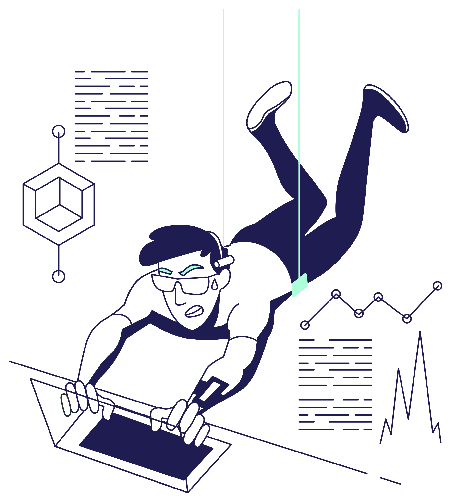
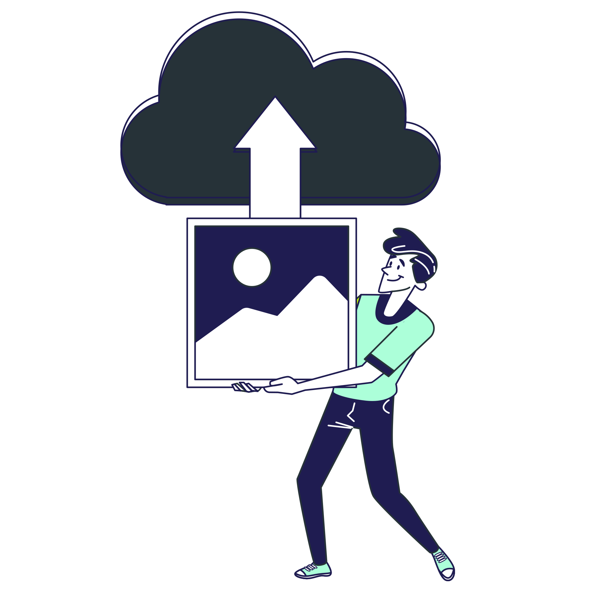

Cadrage et suivi
- Reformulation du projet
- Fiche d’expression des besoins
- Dossier d’étude d’opportunité
- Note de cadrage initiale
- Actualisation du cadrage / avenant
- Comptes rendus de réunion
- Tableau de bord
EXERCICE CYBER ENSAR
Objectif : valider la clôture du projet, présenter le bilan de la démarche, acter les livrables produits et transmettre les éléments nécessaires à la continuité du dispositif pour l’année scolaire suivante.

Objectif initial : préparer une future participation à un événement Cyber 9/12
Évolution des attentes commanditaires en cours de projet
Recentrage vers la conception et la réalisation d’un exercice cyber interne ENSAR
Fin février / début marsHackathon territorial ENSAR
MaiExercice inspiré Cyber 9/12 A2, reconduit
| Objectif | Statut |
|---|---|
| Formaliser le projet et son intérêt pour l’ENSAR | Réalisé |
| Adapter le projet à l’évolution des attentes commanditaires | Réalisé |
| Concevoir un exercice cyber interne | Réalisé |
| Réaliser l’exercice cyber des 19–20 mai 2026 | Réalisé |
| Anticiper la continuité du dispositif pour l’année scolaire suivante | Réalisé |
| Capitaliser et transmettre les éléments utiles | Réalisé / En cours |

Point d’amélioration Formaliser ce type d’évolution plus tôt.
Point d’amélioration Maintenir le tableau de bord à jour plus régulièrement.
| Points positifs | Difficultés rencontrées | Améliorations proposées |
|---|---|---|
| Exercice jugé pertinent et d’actualité | Journées intenses | Mieux équilibrer la charge sur les deux jours |
| Format intéressant et professionnalisant | Groupes trop nombreux | Prévoir des groupes de 4 à 6 étudiants |
| Mise en situation réaliste | Investissement inégal selon les étudiants | Clarifier les rôles dans chaque groupe |
| Travail sur la décision en situation de crise | Défense et géopolitique peu abordées dans la formation | Introduire davantage ces notions en amont |
| Exercice utile pour initier les A2 à la posture de conseil | Difficulté à avoir une vision globale à 10–11 étudiants | Réduire la taille des groupes et structurer l’analyse |
Réalisé les 19 et 20 mai 2026, avec les A2
Année scolaire suivante
Reconduit, en s’appuyant sur le RETEX
Le dossier de passation et le RETEX sont transmis ; les supports sensibles restent conservés par le commanditaire.
Des questions avant de valider la clôture ?